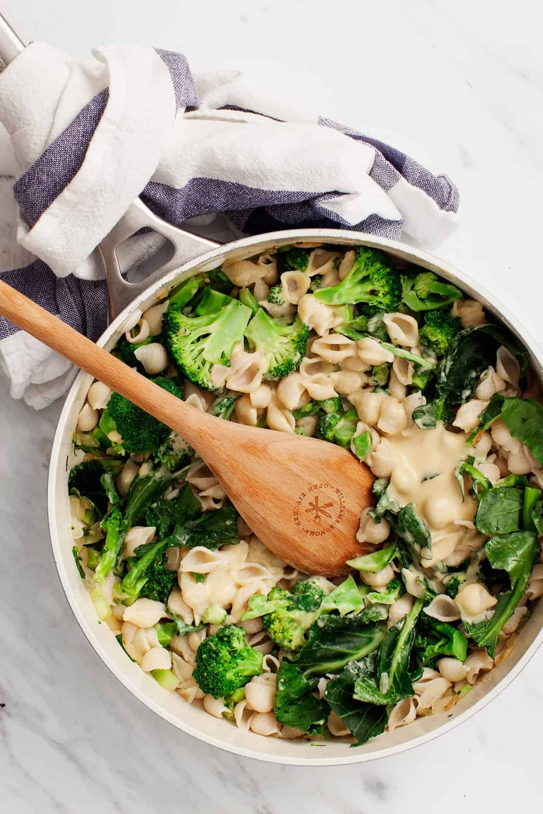

Vegan Creamy Pasta

Description
This creamy vegan pasta is my favorite recipe to make when I'm craving comfort food but don’t have hours to spend in the kitchen. From start to finish, it takes just over 20 minutes to make, so it’s the perfect weeknight meal. All you need to do is boil the pasta, blend up the sauce, sauté onion and broccoli, and toss it all together. Then, you can sit down to devour warm bowls of noodles and veggies coated with this super creamy vegan pasta sauce. While this sauce looks like a rich cream or cheese sauce, it’s actually a tangy, luscious blend of white beans, lemon juice, and nutritional yeast. So this recipe is not only quick & comforting, but it's also healthy!
Ingredients
- 2 1/2 cups small shell pasta
- 1 Tbsp extra-virgin olive oil
- 5 cups broccoli florets, chopped stems, and leaves
- 1/4 cup toasted pine nuts
- lemon wedges for serving
For the creamy sauce
- 1 1/2 cups cooked white beans
- 1/4 cup vegetable broth
- 3 Tbsp fresh lemon juice
- 1/4 cup nutritional yeast
- 1 garlic clove
- 1/4 tsp onion powder
- 1/2 tsp sea salt
- freshly ground black pepper to taste
Instructions
- Make the sauce: In a blender, combine the white beans, broth, lemon juice, olive oil, nutritional yeast, garlic, onion powder, salt, and pepper, and blend until smooth. Set aside.
- Bring a large pot of salted water to a boil. Prepare the pasta according to the instructions on the package, cooking until al dente. Drain and set aside.
- Heat 1 tablespoon of olive oil in a large skillet over medium heat. Add the onion and sauté until soft, about 5 minutes.
- Stir in the chopped broccoli stems and cook for another 3 to 5 minutes or until tender. Add the broccoli florets and leaves and a splash of water or vegetable broth. Cover and turn off the heat.
- Allow the broccoli to steam for 2 to 3 minutes or until tender but still bright green. Add the pasta, then stir in ¾ of the sauce, adding more broth if the sauce is too dry.
- Season to taste with more salt, pepper and lemon juice, as desired, and portion into bowls. Divide the remaining sauce onto each bowl. Top with the pine nuts and serve with lemon wedges on the side.